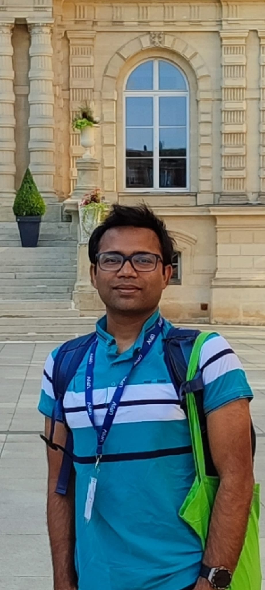

PhD Researcher in Graph Neural Networks & 3D Mesh Learning
CRIL – Centre de Recherche en Informatique de Lens, Université d'Artois, France · Assistant Professor, JUST, Bangladesh
Working at the intersection of Graph Neural Networks, 3D Mesh-Based Learning, and Scientific Machine Learning. My PhD explores GNNs for non-uniform 3D objects — including mesh pooling strategies, graph construction from 3D meshes, and temporal GNN applications in fluid simulation, weather modelling, and physical simulation.

About
Md Yasir Arafat is a PhD Researcher at the Centre de Recherche en Informatique de Lens (CRIL), Université d'Artois, France, where he began his doctoral studies in 2024. His thesis — "Apprentissage sur des objets 3D non-uniformes : une méthode basée sur les graphes" (Learning on Non-Uniform 3D Objects: A Graph-Based Method) — is supervised by Prof. Saïd Jabbour and co-supervised by Dr. Wissem Inoubli, funded by Université d'Artois.
His PhD research focuses on Graph Neural Networks (GNNs) for modelling non-uniform 3D objects such as 3D meshes, addressing scalability challenges through mesh-specific pooling strategies and graph construction methods. The work extends to temporal GNN applications in fluid simulation, weather modelling, and physical 3D mesh simulation.
In parallel, he holds the position of Assistant Professor in the Department of Computer Science and Engineering at Jashore University of Science and Technology (JUST), Bangladesh. He teaches Artificial Intelligence, Machine Learning, Pattern Recognition, Computer Vision, and Bioinformatics, and has supervised numerous undergraduate and Master's-level research projects.
He has undertaken advanced training at IIT Kharagpur and IIT Guwahati through the Bangladesh–Bharat Digital Service and Employment Training (BDSET) programme, working on ML/DL/AI and extended reality (XR) technologies. His internship under Prof. Pabitra Mitra focused on cross-lingual text summarization for Bangla–English language pairs.
Research
Exploring the frontiers of machine learning applied to complex scientific, engineering, and real-world problems.
"Learning on Non-Uniform 3D Objects: A Graph-Based Method"
This thesis explores GNNs for modelling non-uniform 3D objects such as 3D meshes. It addresses scalability challenges through mesh-specific pooling strategies and graph construction methods, and extends to temporal GNN applications in fluid simulation, weather modelling, and physical 3D mesh simulation.
Core PhD research area. Advancing GNNs for non-uniform 3D mesh data, with mesh-specific pooling strategies and scalable graph construction methods that surpass CNN limitations on irregular geometries.
Developing AI-driven surrogate models and physics-aware learning systems that accelerate scientific simulation and encode physical principles within neural architectures.
Applying convolutional and transformer-based vision models to real-world classification, detection, and segmentation problems, including agricultural and biomedical image analysis.
Researching neural network architectures, transformer models, and self-supervised learning strategies for language understanding, sequence modeling, and structured prediction.
Applying intelligent learning systems to engineering challenges including health monitoring, IoT integration, and industrial automation using machine learning pipelines.
Building extractive-abstractive summarization systems, cross-lingual models for Bangla–English language pairs, and computational methods for social media event analysis.
Publications
Peer-reviewed journal articles and conference contributions.
Projects
Funded research initiatives and applied AI development work.
Designed and led a machine learning-driven health monitoring system integrating IoT sensors with personalized fitness and dietary recommendation algorithms. The system enables real-time health data collection and intelligent adaptive recommendations.
Sub-Project Management Team member for a large-scale ICT integration initiative at the Department of Environmental Science and Technology, funded by the University Grant Commission of Bangladesh under the HEQEP project.
Developed a CNN-based framework for automated classification and identification of potato leaf diseases from digital images, contributing to AI-driven precision agriculture solutions.
Internship research project at IIT Kharagpur under Prof. Pabitra Mitra, focusing on cross-lingual extractive-abstractive summarization for Bangla–English language pairs, contributing to low-resource NLP research.
Developed a novel ML pipeline to filter civil unrest-related Twitter content using keyword dictionaries and machine learning, then forecast future event dates, times, and locations using geolocation analysis on streaming data.
Designed and evaluated a novel lossless data compression technique building on the LZW dictionary method, achieving improved compression ratios on textual data compared to standard approaches.
Experience
Academic and industry positions shaping a research career at the intersection of AI and education.
Recognition
Academic recognition, merit scholarships, and professional distinctions.
Dissemination
Presentations, poster sessions, and conference participations in the research community.
Conferences
Events
Conferences
Professional
Active participation in professional engineering and research communities.
Service
Contributing to the scientific community as a reviewer for international journals and conferences.
Skills
A broad toolkit spanning AI research, scientific computing, software development, and academic tools.
Contact
Open to research collaborations, academic discussions, and opportunities in GNN and AI research. Based in Lens, France.